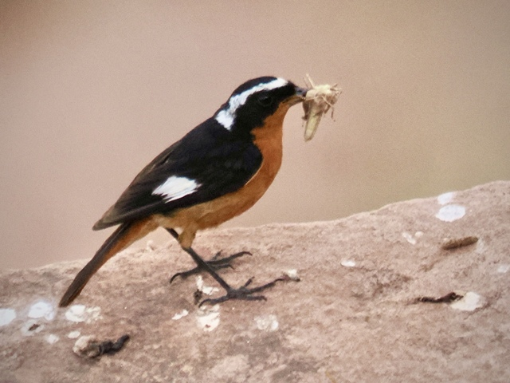

Moussier's Redstart
Phoenicurus moussieri
Order: Passeriformes
Family: Muscicapidae

North African endemic and Morocco's national bird. Male has a black face and white wing patches, but unlike other redstarts does not have a silvery cap, only a white stripe that runs from the forehead to the nape to give the impression of a cap. Belly is bright orange. Found in rocky areas slopes, such as the Atlas mountains.